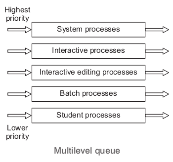
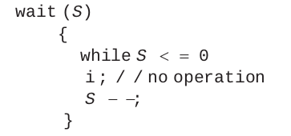
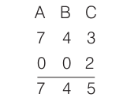
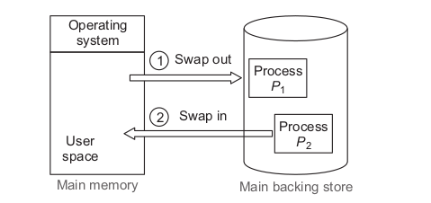

An operating system acts as an intermediary between the user of a
computer and the computer hardware. An Operating System (OS) is a
software that manages the computer hardware

Peripheral interfacing in operating system
Components of a Computer System
Hardware It provides the basic computing resources for the system. It
consists of CPU, memory and the input/output (I/O) devices.
Application Programs Define the ways in which these resources are used
to solve user’s computing problems. e.g., word processors, spreadsheets,
compilers and web browsers
Functions of Operating System
Operating system provides many functions for ensuring the efficient
operation of the system itself. Some functions are listed below
Resource Allocation Allocation of resources to the various processes is
managed by operating system.
Accounting Operating system may also be used to keep track of the
various computer resources and how much and which users are using
these resources.
Protection Protection ensures that all access to the system resources is
controlled. When several processes execute concurrently, it should not be
possible for one process to interface with the other or with the operating
system itself.
Operating System Services
Many services are provided by OS to the user’s programs.
Some of the OS services are listed below
Program Execution:- The operating system helps to load a program into
memory and run it.
I/O Operations:- Each running program may request for I/O operation and
for efficiency and protection the users cannot control I/O devices directly.
Thus, the operating system must provide some means to do I/O
operations.
File System Manipulation :-
Files are the most important part which is
needed by programs to read and write the files and files may also be
created and deleted by names or by the programs. The operating system
is responsible for the file management.
Communications:- Many times, one process needs to exchange
information with another process, this exchange of information can takes
place between the processes executing on the same computer or the
exchange of information may occur between the process executing on the
different computer systems, tied together by a computer network. All these
things are taken care by operating system.
Error Detection:- It is necessary that the operating system must be aware
of possible errors and should take the appropriate action to ensure correct
and consistent computing
Batch Systems
Early computers were the large machines that run from a console. The
users of batch systems did not interact directly with the computer systems.
Rather, the user prepared a job which consists of programs, data and
control information and then submit it to the computer operator. The job
prepared would be in the form of punch cards. After sometime perhaps
minutes, hours or days, the output is prepared.
The main drawback of batch system is the lack of interaction between the
user and the job while it was executing.
Multiprogramming creates logical parallelism.
Multiprogramming
It is the technique of running several programs at a time using time sharing.
It allows a computer to do several things at the same time.
The concept of multiprogramming is that the OS keeps several jobs in
memory simultaneously. The operating system selects a job from the job
pool and starts executing a job, when that job needs to wait for any
input/output operations, the CPU is switched to another job. So, the main
idea here is that the CPU is never idle.
Multitasking
Multitasking is the logical extension of multiprogramming. The concept of
multitasking is quite similar to multiprogramming but difference is that the
switching between jobs occurs so frequently that the users can interact
with each program while it is running.
This concept is also known as time sharing system. A time shared
operating system uses CPU scheduling and multiprogramming to provide
each user with a small portion of time shared system.
Real Time Systems
A real time operating system is used in environments, where a large
number of events, mostly external to the computer system must be
accepted and processed in short time or within certain deadlines.
Real time systems are used when there are rigid time requirements on the
flow of data or the operation of processor and therefore these are used as
a control device in a dedicated application.
Distributed Systems
In distributed systems, the computation is distributed among several
processors. Each processor in distributed system has its own local
memory and do not share memory or a clock.
A distributed operating system governs the operation of a
distributed computer system and provides a virtual machine abstraction to
its users.
Key Points
-
A pool of job on disk allows the OS to select which job to run next, to
increase CPU utilization
-
If jobs come directly on cards (or on magnetic tape), they run sequentially on
FCFS basis but when several jobs are on direct access devices like disk, job
scheduling is possible.
-
The most important aspect of
multiprogramming.
-
If several jobs are ready to be brought into memory, and there is not enough
room for all of them, then the system must choose among them, making this
decision is job scheduling.
- When the OS selects a job from job pool, it loads that job into memory. This
cause the residence of several programs in memory and calls for memory
management scheme.
-
If several jobs are ready to run at same time, the system must choose among
them. This decision is called CPU scheduling.
Threads
A thread is a basic unit of CPU utilisation. A thread comprises a
1- dimensional program counter , a register set and a stack. It shares with
other threads belonging to the same process its code section, data section
and other system resourses such as open files and signals . A traditional
procoss has a single thread of control. If a process has multiple thread of
control, it can perform more than one task at a time.
Multithreading
An application typically is implemented as a separate process with several
threads of control. In some situations, a single application may be required
to perform several similar tasks. e.g., a web server accepts client request
for web pages, images, sound and so on. A busy web server may have
several of clients concurrently accessing it. If the web server run as a
traditional single threaded process, it would be able to service only one
client at a time.
The amount of time that a client might have to wait for its request to be
serviced could be enormous. So, it is efficient to have one process that
contains multiple threads to serve the same purpose.
This approach would multithreaded the web server process, the server
would create a separate thread that would listen for client requests, when a
request was made rather than creating another process, it would create
another thread to service the request.
Multithreading Model
There are two types of threads
- User threads
- Kernel threads
Kernel Threads
Kernel threads are supported and managed directly by the operating system.
User Threads
They are above the kernel and they are managed without kernel support.
There are three common ways of establishing relationship between user
threads and kernel threads
- Many-to-many model
- Many-to-one model
- One-to-one model
- One-to-one model maps each user thread to corresponding kernel
threads.
- Many-to-many model multiplexes many user threads to a smaller or
equal number of kernel threads.
- Many-to-one model maps many user threads to single kernel threads.
Key Points
-
User level threads are threads that are visible to the programmer and
unknown to the Kernel.
-
User level threads are faster to create and manage than that of Kernel threads.
Process
A process is a program in execution. A process is more than the program
code i.e., text section. It also includes the current activity as represented by
the value of the program counter and the contents of the processor’s register.
Process in Memory
Each process is represented in the OS by a Process Control Block (PCB)
also called a task control block.
As processes enter the system, they are put
into a job queue, which consists of all
processes in the system.
The processes that are residing in main
memory and are ready and waiting to execute
are kept on a list called the ready queue.
Key Points
- The list of processes waiting for a particular I/O device is called a device
queue. Each device has it’s own device queue.
- I/O bound process is one that spends more of its time doing I/O rather than it
spends doing computations.
- A CPU bound process is one which uses more of its time doing computations
rather than it spends doing I/O activities.
Schedulers
A process migrates among various scheduling queues throughout its
lifetime. The OS must select for scheduling purposes, processes from
these queues in some fashion. The selection process is carried out by the
appropriate scheduler.
Long Term and Short Term Schedulers
A long term scheduler or job scheduler selects processes from job pool
(mass storage device, where processes are kept for later execution) and
loads them into memory for execution.
A short term scheduler or CPU scheduler, selects from the main memory
among the processes that are ready to execute and allocates the CPU to
one of them.
The long term scheduler controls the degree of multiprogramming (the
number of processes in memory).
Dispatcher
It is the module that gives control of the CPU to the process selected by the short term
scheduler. This function involves the following
- Switching context
- Jumping to the proper location in the user program to restart that program.
- Switching to user mode
Scheduling Algorithm
All of the processes which are ready to execute and are placed in main
memory then selection of one of those processes is known as scheduling,
and after selection that process gets the control of CPU.
Scheduling Criteria
The criteria for comparing CPU scheduling algorithms include the following
CPU Utilization:-
Means keeping the CPU as busy as possible.
Throughput :-
It is nothing but the measure of work i . e., the number of
processes that are completed per time unit.
Turnaround Time:- The interval from the time of submission of a process to
the time of completion. It is the sum of the periods spent waiting to get into
memory, waiting in the ready queue, executing on the CPU and doing I/O.
Waiting Time:- The sum of the periods spent waiting in the ready queue.
Response Time :-The time from the submission of a request until the first
response is produced.
First Come First Served (FCFS) Scheduling
With this scheme, the process that requests the CPU first is allocated the
CPU first. The implementation of the FCFS policy is easily managed with
FIFO queue. When a process enters the ready queue, its PCB (Process
Control Block) is linked onto the tail of the queue. When the CPU is free, it is
allocated to the process at the head of the queue. The running process is
then removed from the queue.
Shortest Job First (SJF) Scheduling
When the CPU is available, it is assigned to the process that has the
smallest next CPU burst. If the two processes have the same length or
amount of next CPU burst, FCFS scheduling is used to break the tie.
Process Table
A more appropriate term for this scheduling method would be the shortest
next CPU burst algorithm because scheduling depends on the length of
the next CPU burst of a process rather than its total length.
Preemptive and Non-preemptive Algorithm
The SJF algorithm can either be preemptive or non-preemptive. The choice
arises when a new process arrives at the ready queue while a previous
process is still executing. The next CPU burst of the newly arrived process
may be shorter than what is left of the currently executing process.
A preemptive SJF algorithm will preempt the currently executing process,
whereas a non-preemptive algorithm will allow the currently running
process to finish its CPU burst. Preemptive SJF scheduling is sometimes
called shortest-remaining-time-first-scheduling.
Priority Scheduling
A priority is associated with each process and the CPU is allocated to the
process with the highest priority. Equal priority processes are scheduled in
FCFS order.
We can be provided that low numbers represent high priority or low
numbers represent low priority. According to the question, we need to
assume any one of the above.
Key Points
-
Priority scheduling can be either preemptive or non-preemptive.
- A preemptive prioirty scheduling algorithm will preempt the CPU, if the
priority of the newly arrived process is higher than the priority of the currently
running process.
-
A non-preemptive priority scheduling algorithm will simply put the new
process at the head of the ready queue.
A major problem with priority scheduling algorithm is indefinite blocking or
starvation.
Round Robin (RR) Scheduling
The RR scheduling algorithm is designed especially for time sharing
systems. It is similar to FCFS scheduling but preemption is added to switch
between processes. A small unit of time called a time quantum or time
slice is defined.
The ready queue is treated as a circular queue. The CPU scheduler goes
around the ready queue allocating the CPU to each process for a time
interval of up to 1 time quantum. The process may have a CPU burst of less
than 1 time quantum, in this case the process itself will release the CPU
voluntarily. The scheduler will then proceed to next process in the ready
queue.
Otherwise, if the CPU burst of the currently running process is longer than 1
time quantum, the time will go off and will cause an interrupt to the
operating system. A context switch will be executed and the process will be
put at the tail of the ready queue. The CPU scheduler will then select the
next process in the ready queue.
Multilevel Queue Scheduling
This scheduling algorithm has been
created for saturations in which
processes are easily classified into
different groups. e.g., a division between foreground (interactive) processes and background (batch) processes. A multilevel queue
scheduling algorithm partitions the
ready queue into several separate
queues.
The
processes
are
permanently assigned to one queue,
generally based on some property of
the process, such as memory size,
process priority or process type.

Multilevel Feedback Queue Scheduling

This scheduling algorithm allows a process to move between queues. The
idea is to separate processes according to the characteristics of their CPU
bursts.
If a process uses too much CPU time, it will be moved to a lower priority
queue. Similarly, a process that waits too long in a lower priority queue may
be moved to a higher priority queue. This form of aging prevents starvation.
Synchronization
When several processes access and manipulate the same data
concurrently and the outcome of the execution depends on
the particular order in which the access takes place is called race
condition.
e.g., Suppose we have two variables A and B. The operation on A and B are
as follows
For the race condition above, we need to ensure that only one process at a
time can be manipulating the variable result. To make such a gaurantee,
we require that the processes be synchronized is some way.
Inter-Process Communication (IPC)
Processes executing concurrently in the operating system may be either
independent or cooperating processes. A process is independent, if it
can’t affect or be affected by the other processes executing in the system.
Any process that shares data with other processes is a cooperating
process. Advantages of process cooperations are information sharing,
computation speed up, modularity and convenience to work on many task
at the same time. Cooperating processes require an Inter-Process
Communication (IPC) mechanism that will allow them to exchange data
and information.
There are two fundamental models of IPC
- Shared memory
- Message passing
In the shared memory model, a region of memory that is shared by
cooperating process is established. Process can then exchange
information by reading and writing data to the shared region.
In the message passing model, communication takes place by means of
messages exchanged between the cooperating processes.
The Critical Section Problem
Consider a system containing of n processes { P0, P1, ..., Pn - 1}. Each
process has a segment of code, called a critical section, in which the
process may be changing common variables, updating a table, writing a
file and so on.
The important feature of the system is that, when one process is executing
in its critical section, no other process is to be allowed to execute in its
critical section. That is, no two processes are executing in their critical
sections at the same time.
The critical section problem is to design a protocol that the processes can
use to cooperate. Each process must request permission to enter its
critical section.
The section of code implementing this request is the entry section. The
critical section may be followed by an exit section. The remaining code is
the remainder section.
General structure of a typical process Pi is given below
A solution to critical section problem must satisfy the following three
requirements
Mutual Exclusion
If a process Pi is executing in its critical section, then no other processes
can be executing in their critical sections.
Progress
If no process is executing in its critical section and some processes wish to
enter their critical sections, then only those processes that are not executing
in their remainder sections can participate in deciding which will enter its
critical section next and this selection can’t be postponed indefinitely.
Bounded Waiting
There exists a bound or limit, on the number of times that other processes
are allowed to enter their critical sections after a process has made a
request to enter its critical section and before that request is granted.
Semaphores
Semaphore is nothing but a synchronization tool. A semaphore S is an
integer variable that apart from initialization, is accessed only through two
standard atomic operations wait ( ) and signal ( ). The wait ( ) operation
does testing of the integer value of S (S £ 0) as well as its possible
modification (S - -).

The signal ( ) operation does increment to the integer value of S (S + + ).
All modifications to the integer value of semaphore in the wait ( ) and signal
( ) operations must be executed indivisibly.
Usage of Semaphores
We can use binary semaphores to deal with the critical section problem
for multiple processes. The n processes share a semaphore, mutex,
initialized to 1.
The value of binary semaphore can range only between 0 and 1.
Binary semaphores are known as mutex locks as they are locks that
provide mutual exclusion.
Mutual exclusion implementation with semaphores
Key Points
-
Counting semaphores can be used to control access to a given resource
consisting of a finite number of instances.
-
The value of a counting semaphore can range over an unrestricted domain.
Classical Problem of Process Synchronization
1. Producer-consumer problem
3. Dining-philosopher problem
2. Readers-writer problem
Producer-Consumer Problem
In this problem, there are two processes
(i) producer process
(ii) consumer process.
A shared buffer (global) is defined which is accessible by producer and
consumer.
Producer process produces items and appends these in buffer.
Consumer process consumes items from buffer.
The Readers-Writers Problem
Suppose that a database is to be shared among several concurrent
processes. Some of these processes may want only to read the databases
(we can say these as readers). Whereas other processes may want to
update (that is, to read and write) the database (we can say these
processes as writers). Obviously, if two readers access the shared data
simultaneously, no adverse effects will result.
However, if a write and some other process (either a reader or a writer)
access the database simultaneously, chaos may ensure.
To ensure that these difficulties do not arise, we require that the writers
have exclusive access to the shared database while writing to database.
This synchronization problem is referred to as the readers-writers
problem.
Key Points
Both of the processes (i.e., producer and consumer) cannot access buffer
simultaneously.
Mutual exclusion should be here.
Producer cannot append item in full buffer (finite buffer) and consumer can
not take item from empty buffer.
The Dining-Philosophers Problem
Consider five philosophers who spend their lives thinking and eating. The
philosophers share a circular table surrounded by 5 chairs, each belonging
to one philosopher. In the center of the table is a bowl of rice and the table
is laid with 5 chopsticks. When a philosopher thinks, he doesn’t interact
with his colleagues.
From time to time, a philosopher gets hungry and tries to pick up the 2
chopsticks that are closest to him (the chopsticks that are between him
and his left and right neighbours). A philosopher may pick up only one
chopstick at a time. Obviously, he can’t pick up a chopstick that is already
in the hand of a neighbour. When a hungry philosopher has both his
Chopsticks at the same time. He eats without releasing his chopsticks.
When he is finished, he puts down both of his chopsticks and starts
thinking again.
This problem is a simple representation of the need to allocate several
resources among several processes in a deadlock free and starvation free
manner.
Deadlock
In a multiprogramming environment, a situation when permanent blocking
of a set of processes that either compete for system resources or
communicate with each other happens, we can call this as deadlock
situation. This deadlock problem involves conflicting needs for resources
by two or more processes.
Necessary Conditions for Deadlock
A deadlock situation can arise, if the following four conditions hold
simultaneously in a system.
Mutual Exclusion
Resources must be allocated to processes at any time in an exclusive
manner and not on a shared basis for a deadlock to be possible. If another
process requests that resource, the requesting process must be delayed
until the resource has been released.
Hold and Wait Condition
Even if a process holds certain resources at any moment, it should be
possible for it to request for new ones. It should not give up (release) the
already held resources to be able to request for new ones. If it is not true, a
deadlock can never take place.
No Preemption Condition
Resources can’t be preempted. A resource can be released only voluntarily
by the process holding it, after that process has completed its task.
Circular Wait Condition
There must exist a set = { P0, P1, P2, ..., Pn} of waiting processes such that P0
is waiting for a resource that is held by P1, P1 is waiting for a resource that is
held by P2, ..., Pn - 1 is waiting for a resource that is held by P0.
Resource Allocation Graph
The resource allocation graph consists of a set of vertices V and a set of
edges E.
Set of vertices V is partitioned into two types
(i) P = { P1, P2, ..., Pn}, the set consisting of all the processes in the
system.
(ii) R = { R1, R2, ..., Rm }, the set consisting of all resource types in the
system.
Directed Edge Pi ® R j is known as request edge.
Directed Edge R j ® Pi is known as assignment edge.
Process States
Process P1 is holding an instance of resource type R2 and is waiting for an
instance of resource type R1.
Process P2 is holding an instance of R1 and R2 is waiting for an instance of
resource type R3.
Process P3 is holding an instance of R3.
Basic facts related to resource allocation graphs are given below
Note :-If graph consists no cycle it means there is no deadlock in the system.
If graph contains cycle
(i) If only one instance per resource type, then deadlock.
(ii) If several instances per resource type, then there may or may not be
deadlock.
Deadlock Handling Strategies
1. Deadlock prevention
2. Deadlock avoidance
3. Deadlock detection
Deadlock Prevention
Deadlock prevention is a set of methods for ensuring that atleast one of the
necessary conditions can’t hold.
Deadlock Avoidance
A deadlock avoidance algorithm dynamically examines the resource
allocation state to ensure that a circular wait condition can never exist. The
resource allocation state is defined by the number of available and
allocated resources and the maximum demands of the processes.
A state is safe, if the system can allocate
resources to each process and still avoid a
deadlock.
A system is in safe state, if there exists a safe
sequence of all processes. A deadlock state is
an unsafe state. Not all unsafe states cause
deadlocks.
Banker’s Algorithm
Data structures for Banker’s algorithm available. Vector of length m. If
available [ j ] = k, there are k instances of resource type R j available.
Max n ´ m matrix. If max [ i , j ] = k, then process Pi may request at most k
instances of resource type R j .
Allocation n ´ m matrix. If allocation[ i , j ] = k, then Pi is currently allocated
k instances of Ri .
Need n ´ m matrix. If need[ i , j ] = k, then Pi may need k more instances of
R j to complete its task.
Need [ i , j ] = max [ i , j ] - allocation [ i , j ]
Safety Algorithm
Step 1 :-Let work and finish be vectors of length m and n, respectively.
Initialize
Work = Available
Finish [ i ] = False (for i = 1, 2, ..., n)
Step 2:-
Find i such that both
(a) Finish [ i ] = False
(b) Need £ Work
If no such i exists, go to step 4.
Step 3:- Work = Work + Allocation
Finish [ i ] = Tree
Go to step 2.
Step 4
Finish [ i ] = True (for all i)
Then, the system is in a safe system.
As available resources are (3 3 2). The process P1 with need (1 2 2) can
be executed.
Available resource = Available + Allocated resource of P1
Now, available resources are (5 3 2).
The next process that can be executed after assigning available
resource is P3. Thus, P3 will execute next.
Now, available resource = Available resource + Resource of P3
Now, available resources are 7 4 3. Next process will be P4.

Next process that will be executed is P0.
Available resource
Key Points
The sequence < P1 , P3 , P4 , P0 , P2 > ensures that the deadlock will never occur.
If a safe sequence can be found that means the processes can run
concurrently and will never cause a deadlock.
First in first out scheduling based on queuing.
Shortest seek time scheduling is designed for maximum through put in most
scenarios
RR scheduling involves extensive overhead, especially with a small time unit.
Kernel is defined as a program running all times on the computer. It is the part
of operating system that loads first. In simple word, kernel provides the
communication between system software and hardware.
Deadlock Detection
Allow system to enter deadlock state and then there is
(i) Detection algorithm
(ii) Recovery scheme
Single instance of each resource type
(i) Maintain wait for graph.
(a) Nodes are processes.
(b) Pi ® Pj , if Pi is waiting for Pj .
(ii) Periodically invoke an algorithm that searches for a cycle in the
graph.
(iii) An algorithm to detect a cycle in a graph requires an order of n2
operations, where n is the number of vertices in the graph.
Recovery Scheme
Resource preemption
Process termination
(i) Abort all deadlock processes
(ii) Abort one process at a time until the deadlock cycle eliminated.
Memory Management
Memory management techniques allow several processes to share
memory. When several processes are in memory they can share the CPU,
thus increasing CPU utilisation.
Overlays
This techniques allow to keep in memory only those instructions and data,
which are required at given time.
The other instruction and data is loaded into the memory space occupied
by the previous ones when they are needed.
Swapping
Consider an environment which supports multiprogramming using say
Round Robin (RR) CPU scheduling algorithm. Then, when one process has
finished executing for one time quantum, it is swapped out of memory to a
backing store.

The memory manager then picks up another process from the
backing store and loads it into the memory occupied by the previous
process. Then, the scheduler picks up another process and allocates the
CPU to it.
Memory Management Techniques
The main memory must accommodate both the operating system and the
various user processes. The parts of the main memory must be allocated in
the most efficient way possible.
There are two ways for memory allocation as given below
Single Partition Allocation
The memory is divided into two parts. One to be used by
OS and the other one is for user programs. The OS code
and date is protected from being modified by user
programs using a base register.
Multiple Partition Allocation
The multiple partition allocation may be further classified as
Fixed Partition Scheme
Memory is divided into a number of fixed size partitions. Then, each
partition holds one process. This scheme supports multiprogramming as a
number of processes may how be brought into memory and the CPU can
be switched from one process to another.
When a process arrives for execution, it is put into the input queue of the
smallest partition, which is large enough to hold it.
Variable Partition Scheme
A block of available memory is designated as a hole at any time, a set of
holes exists, which consists of holes of various sizes scattered throughout
the memory.
When a process arrives and needs memory, this set of holes is searched
for a hole which is large enough to hold the process. If the hole is too large,
it is split into two parts. The unused part is added to the set of holes. All
holes which are adjacent to each other are merged.
Disadvantages of Memory Management Techniques
The above schemes cause external and internal fragmentations of the
memory as given below
External Fragmentation When there is enough total memory in the system
to satisfy the requirements of a process but the memory is not contiguous.
Internal FragmentationI The memory wasted inside the allocated blocks of
memory called internal fragmentation.
e. g ., consider a process requiring 150 k, thus if a hold of size 170 k is
allocated to it the remaining 20 k is wasted.
Compaction
This is strategy to solve the problem of external fragmentation. All free
memory is placed together by moving processes to new locations.
Paging
It is a memory management technique, which allows the memory to be
allocated to the process wherever it is available. Physical memory is
divided into fixed size blocks called frames. Logical memory is broken into
blocks of same size called pages. The backing store is also divided into
same size blocks.
When a process is to be executed its pages are loaded into available page
frames. A frame is a collection of contiguous pages. Every logical address
generated by the CPU is divided into two parts. The page number ( P ) and
the page offset (d ). The page number is used as an index into a page
table.
Each entry in the page table contains the base address of the page in
physical memory (f). The base address of the Pth entery is then combined
with the offset (d) to give the actual address in memory.
Key Points
The size of a page is typically a power of 2. The selection of a power of 2 as a
page size makes the translation of a logical address into a page number and
page off set, particularly easy.
If the size of logical address space is 2m and a page size is 2n addressing units
(bytes or words), then the high order (m-n) bits of a logical address designates
the page number and the n low- order bits designates the page offset.
Advantages of Paging
The following are the advantages of paging
It allows the memory of a process to be non-contiguous. This also solves
the problem of fitting or storing memory blocks of varying sizes in
secondary memory (such as backing store).
Paging also allows sharing of common code. Two or more processes are
allowed to execute the same code at the same time.
Virtual Memory
Separation of user logical memory from physical memory. It is a technique to
run process size more than main memory. Virtual memory is a memory
management scheme which allows the execution of a partially loaded process.
Advantages of Virtual Memory
The advantages of virtual memory can be given as
Logical address space can therefore be much larger than physical
address space.
Allows address spaces to be shared by several processes.
Less I/O is required to load or swap a process in memory, so each user
can run faster.
Segmentation
Logical address is divided into blocks called segment i.e., logical address
space is a collection of segments. Each segment has a name and length.
Logical address consists of two things
< segment_number, offset>
Segmentation is a memory-management scheme that supports the
following user view of memory. All the location within a segment are
placed in contiguous location in primary storage.
Demand Paging
Virtual memory can be implemented by using either of the below.
(i) Demand paging
(ii) Demand segmentation
Demand paging is combination of swapping and paging. With demand
paged virtual memory, pages are only loaded when they are demanded
during program execution. As long as we have no page faults, the effective
access time is equal to the memory access time. If however, a page fault
occurs, we must first read the relevant page from disk and then access the
desired word.
Page Replacement
In a multiprogramming environment, the following scenario often results.
While execution of a process, page fault occurs and there are no free
frames on the free frame list. This is called over allocation of memory and
results due to increase in the degree of multiprogramming. Page
replacement is a technique to solve this problem.
key points
Paging and segmentation implement non-contiguous allocation of memory.
Logical memory is divided into blocks called pages physical memory is
divided into fixed sized blocks known as frames.
Concept
If no free frame is available, a frame is found which is not in use. The
contents of the frame are written onto a backing store and the page tables
are modified to indicate that the page is no longer in memory. Thus, the
frame can be used to hold the page for which the page fault was
generated.
One bit is associated with each frame. If the bit is 1, this implies that the
contents of the page was modified this is called the dirty bit. If the dirty bit is
0, the content of the frame need not be written to the backing store.
Page Replacement Algorithms
In a computer operating system that uses paging for virtual memory
management, page replacement algorithms decide which memory pages
to page out when a page of memory needs to be allocated.
First In First Out (FIFO)
A FIFO replacement algorithm associates with each page, the time when
that page was brought into memory. When a page must be replaced, the
oldest page is chosen.
It is not strictly necessary to record the time, when a page is brought in.
We can create a FIFO queue to hold all pages in memory. We replace the
page at the head of the queue. When a page is brought into memory we
insert it at the tail of the queue.
e.g., Consider the reference string
7, 0, 1, 2, 0, 3, 0 4, 2, 3, 0 3, 2, 1, 2, 0, 1, 7, 0, 1
Initially our 3 frames (frame size = 3) are empty. The first 3 references
(7, 0, 1) cause page faults and are brought into these empty frames. The
next reference (2) replaces page 7, because page 7 was brought in first.
Since, 0 is the next reference and 0 is already in memory, we have no fault
for this reference. The first reference to 3 results in replacement of page 0,
since it is now first in line. Because of this replacement, the next reference
to 0, will fault. Page 1 is then replaced by page 0. This process continues
as shown in below figure.
Optimal Page Replacement
It has the lowest page fault rate of all algorithms and will never suffer from
Belady’s anomaly. This algorithm replaces the page that will not be used
for the longest period of time. This algorithm gives a lowest page fault rate.
It is very difficult to implement because, if requires future knowledge about
the usage of the page.
e.g., Using the previous reference string, the optimal page replacement
algorithm would field 9 page faults. The first 3 references cause faults that
fill the 3 empty frames. The reference to page 2 replaces page 7, because
page 7 will not be used until reference 18, whereas page 0 will be used at 5
and page 1 at 14. The reference page 3 replaces page 1, as page 1 will be
the last of the 3 pages in memory to be referenced again.
Key Points
Beladys’ Anomaly For some page replacement algorithms, the page fault rate
may increase as the number of allocated frames increases.
This phenomenon known as Belady’s anomaly.
Least Recently Used (LRU) Page Replacement
In this, we use the recent past as an approximation of the near future, then
we can replace the page that has not been user for the longest period of
time.
e.g., We are considering the previous reference string (used in optimal
page replacement algorithm). In LRU algorithm, the first 5 faults are the
same as those for optimal replacement. When the reference to page 4
occurs, however LRU replacement sees that of the 3 frames in memory,
page 2 was used least recently, Thus, the LRU algorithm replaces page 2,
not knowing that page 2 is about to be used. When it then faults for page 2,
the LRU algorithm replaces page 3, since it is how the least recently used
of the three pages in memory. Consider frame size = 3 for example given
below.
Frame Allocation
The maximum number of frames that can be allocated to a process
depend on the size of the physical memory (i . e., total number of frames
available). The minimum number of frames which can be allocated to a
process depend on the instruction set architecture.
Thrashing
A process is said to be thrashing when it is spending more time in paging
( i . e. , it is generating a lot of page faults) than executing.
Thrashing causes low CPU utilisation. The
processes which are thrashing queue up for
the paging device.
The CPU schedule sees the empty ready
queue and tries to increase the degree of
multiprogramming by introducing more
processes in the system. These new Degree of multiprogramming
processes cause more page faults and
increase the length of the queue for the paging device.
File Management
Logically related data items on the secondary storage are usually
organised into named collections called files. A file may contain a report,
an executable program as a set of commands to the operating system. A
file often appears to the users as a linear array of characters or record
structures.
The file system consists of two parts
(i) A collection of files
(ii) A directory structure
The file management system can be implemented as one or more layers of
the operating system.
The common responsibilities of the file management system includes the
following
Mapping of access requests from logical to physical file address space
Transmission of file elements between main and secondary storage.
Management of the secondary storage such as keeping track of the
status, allocation and deallocation of space.
Support for protection and sharing of files and the recovery and possible
restoration of the files after system crashes.
File Attributes
Each file is referred to by its name. The file is named for the convenience of
the users and when a file is named, it becomes independent of the user
and the process. Below are file attributes
Name Type
Location
Size
Protection
Time and date
Disk Scheduling
One of the responsibilities of the OS is to use the hardware efficiently. For
the disk drives, meeting this responsibility entails having fast access time
and large disk bandwidth.
Access time has two major components
Seek time is the time for the disk arm to move the heads to the cylinder
containing the desired sector.
The rotational latency is the additional time for the disk to rotate the
desired sector to the disk head. It is not fixed, so we can take average
value.
Disk bandwidth is the total number of bytes transferred, divided by the
total time between the first for service and the completion of last transfer.
File Operations
The OS provides system call to create, read , write, delete and truncate files.
The common file operations are as follows
File Creation For a file to be created firstly, a space must be found for a file, in the
file system and secondarily a new entry must be made in the directory for the new
file.
Writing a File In order to write a file, a system call is made, which specify the file
name and the information to be written in file.
Repositioning within a File Repositioning within a file desn’t need to invoke any
actual I/O. This is also known as file seek.
File Deletion The directory for the named file is searched in order to delete a file
and when the associated directory entry is found, all the file space is released and
the directory entry is removed.
Truncating a File Truncating a file is used when the user wants the attributes of the
file to remain the same but wants to erase the contents of the file. There is no use of
deleting a file and recreating it rather this function allow all attributes to remain
unchanged but for the file to reset the length zero.
FCFS Scheduling
This is also known as First In First Out (FIFO) simply queues processes in
the order that they arrive in the ready queue.
The following features which FIFO scheduling have.
First come first served scheduling
Processes request sequentially.
Fair to all processes, but it generally does not provide the fastest service.
Consider a disk queue with requests for I/O to blocks on cylinder i . e.,
Queue = 98, 183, 37, 122, 14, 124, 65, 67
Head starts at 53
Total head movement
The wild swing from 122 to 14 and then back to 124 illustrates the problem
with this schedule. If the requests for cylinder 37 and 14 could be serviced
together, before or after the requests for 122 and 124, the total head
movement could be decreased substantially and performance could be
thereby improved.
Shortest Seek Time First (SSTF) Scheduling
It selects the request with the minimum seek time from the current head
position. SSTF scheduling is a form of SJF scheduling may cause
starvation of some requests. It is not an optimal algorithm but its
improvement over FCFS.
Queue = 98, 183, 37, 122, 14, 124, 65, 67
Head starts at 53.
This scheduling method results in a total head movement of only
236 cyclinders little more than one-third of the distance needed for FCFS
scheduling of this request time. Clearly this algorithm gives a substancial
improvement in performance
SCAN Scheduling
In the SCAN algorithm, the disk arm starts at one end of the disk and
moves toward the other end, servicing requests as it reaches each cylinder
until it gets to the other end of the disk. At the other end, the direction of
head movement is reversed and servicing continues. The head
continuously scans back and forth across the disk. The SCAN algorithm is
sometimes called the elevator algorithm, since the disk arm behaves just
like an elevator in a building, first servicing all the request going up and
then reversing to service requests the other way.
Queue = 98, 183, 37, 122, 14, 124, 65, 67
Head starts at 53.
C-SCAN Scheduling
Circular SCAN is a variant of SCAN, which is designed to provide a more
uniform wait time. Like SCAN, C-SCAN moves the head from one end of
the disk to the other, servicing requests along the way. When the head
reaches the other end, however it immediately returns to the beginning of
the disk without servicing any requests on the return trip. The C-SCAN
scheduling algorithm essentially treats the cylinders as a circular list that
wraps around from the final cylinder to the first one.
Queue = 98, 183, 37, 122, 14, 124, 65, 67
Head starts at 53.
Key Points
Bootstrap For a computer to start running for instances when it is powered up
or rebooted, it needs to have an initial program to run. This initial program is
known as bootstrap program.
Bootstrap program is stored in ROM or EEPROM which is known as a
firmware.
System Calls System calls provide an interface to the service made available
by operating system.
Single Processor System In a single processor system, there is one main CPU
capable of executing a general purpose instruction set, including instructions
from user processes.
Multi Processor System It is alos known as a parallel system or tightly
coupled system.
Cluster System In Cluster system, computers share common storage and are
closely linked via a LAN.